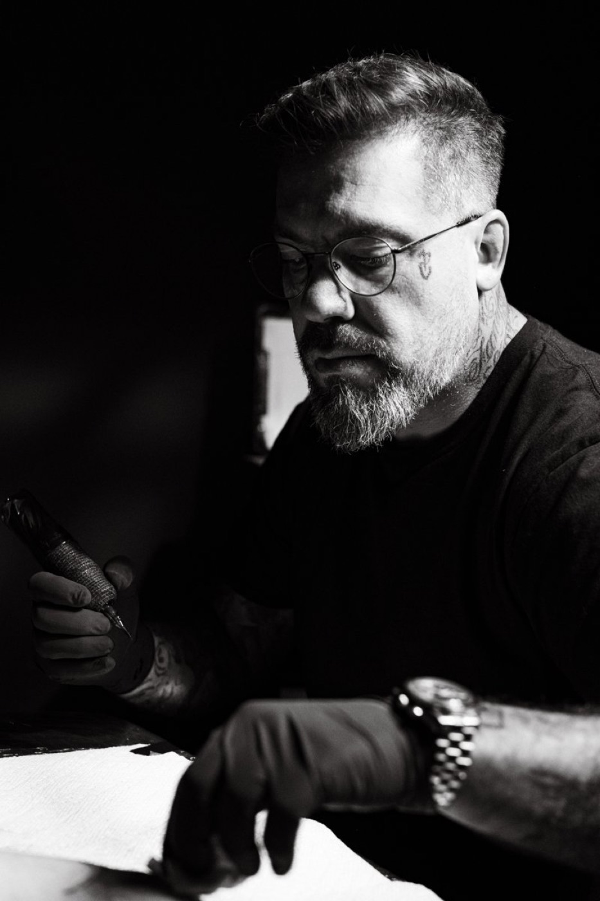

The Artist

Rafael Cassaro was born in Santo André, São Paulo, into a family where art was already part of everyday life. His mother was an artist, and the people who raised him drew, painted and worked with their hands. He lost her early; the language she worked in stayed.
Art reached him before he could name it. The women who recur throughout his work were never a subject he set out to choose, he simply understands now where they come from. What was handed down to him, he keeps handing back, one figure at a time.
I paint the presence I was too young to remember; the work holds her light, and I stay in the shadow.
Over more than twenty years his hand has crossed Europe, South America and North America, rooted in black and grey realism, moving today between classical painting, the Renaissance, the Baroque, and abstraction. He works on canvas as readily as on skin.
One person at a time, by commission. A piece is drawn by hand for whoever is going to carry it, and large work is built over months rather than rushed into a single day. Colour appears only as an accent when the piece asks for it; the foundation is always black and grey.
He does not post a price for an idea he has not seen, and he does not decide the shape of a project over text. That is what the consultation is for, and it is on him.
Recognition
His peers named him a juror at the Empire State and Golden State Tattoo Expos; Eternal Ink lends him its name. He works on canvas as readily as on skin. He says none of it himself.
If the work speaks to you, the next step is a conversation.
Tell me what you have in mind. I read every inquiry personally and reply with the next step.
Start a commission